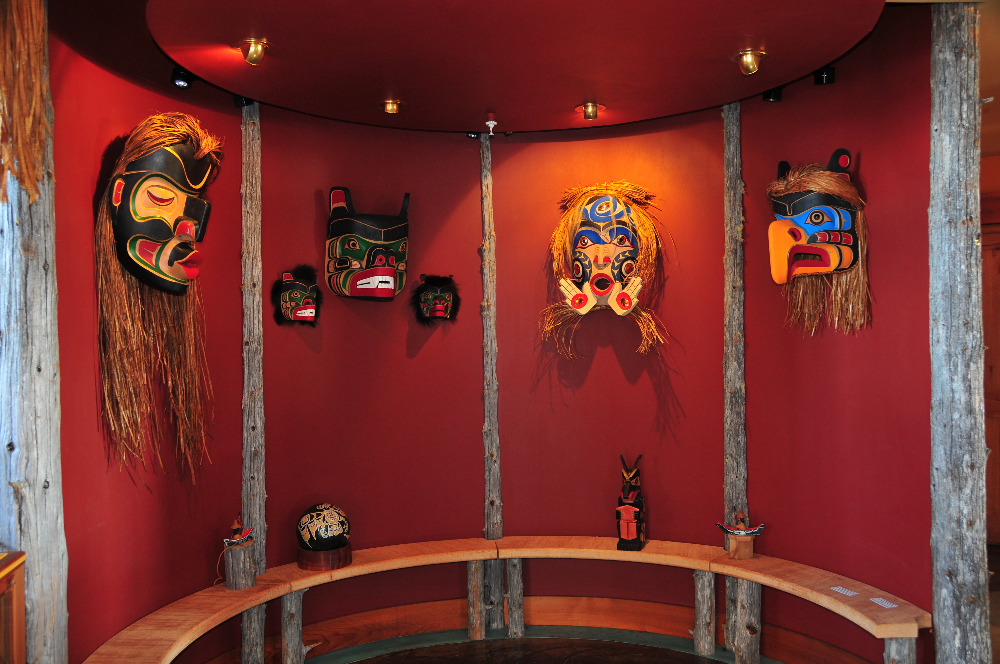

About
Established in 1996, Coastal Peoples Gallery has brought visitors and
collectors together to experience a superb collection of fine First Nations
and Inuit art works.
Celebrating over 20 years of excellence, Coastal Peoples has become
renowned for its museum-quality works which entice inquisitive
newcomers as well as seasoned collectors to delve further into this
fascinating and legendary art form. The Gallery represents master artisans,
and has earned a reputation for discovering a new generation of gifted talent
who create beyond the boundaries of the traditional.
For centuries, First Nations peoples have flourished along the westcoast
of Canada, and the northern Arctic, living amongst spectacular sweeping
landscapes and mountainous regions. Emerging from this abundant land of natural beauty
is a diverse group of artisans who captivate us with their mythic stories
and culturally expressive art works.
The Gallery's collection encompasses both the traditional and contemporary,
and speaks to the deeply rooted oral traditions of those who handcraft
these magnificent creations.
We offer our gratitude to these artists who have dedicated themselves
to their art and thank them for their passion, creativity and sense
of pride.
